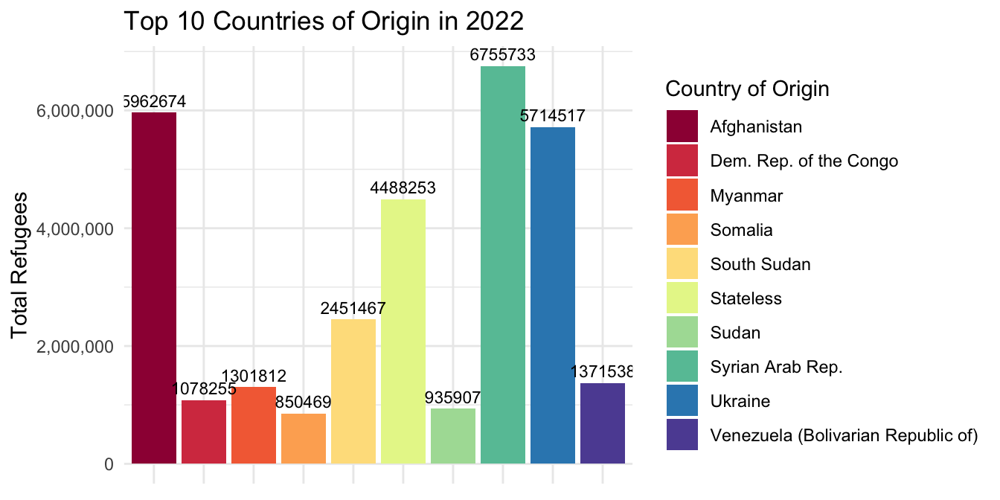
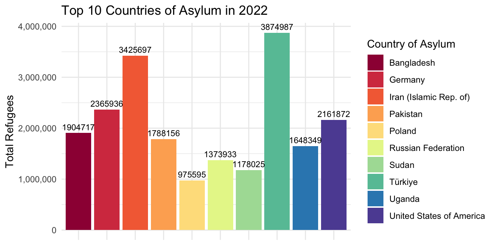
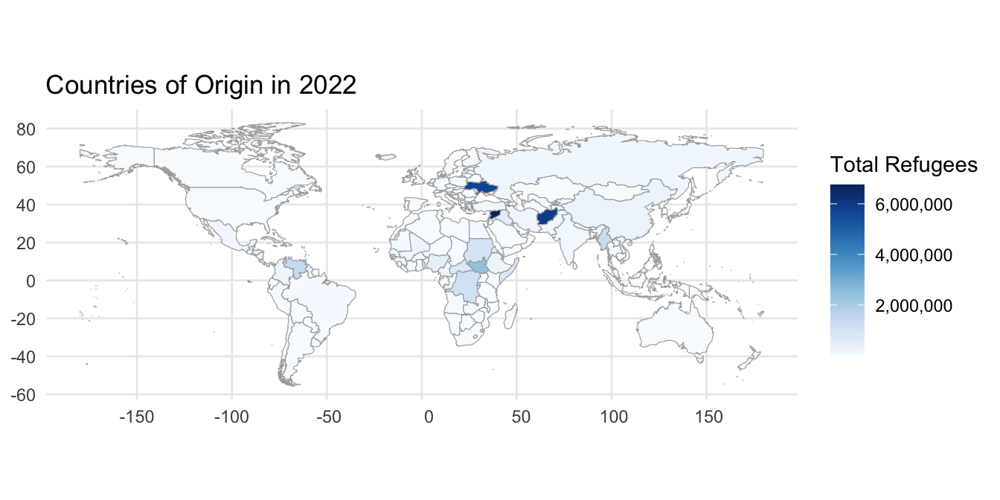
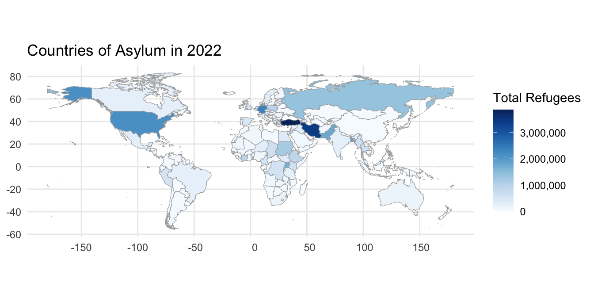

Project Write-up
Global Refugee Movements & Trends
Introduction:
The data utilized in our analysis originates from the {refugees} R package, specifically designed to facilitate access to the United Nations High Commissioner for Refugees (UNHCR) Refugee Data Finder. This package provides an easy-to-use interface to a comprehensive database spanning over 70 years and covering various forcibly displaced populations, including refugees, asylum-seekers, internally displaced people, stateless individuals, and others. It aggregates data from three primary sources: the UNHCR’s annual statistical reports dating back to 1951, the United Nations Relief and Works Agency for Palestine Refugees in the Near East (UNRWA), and the Internal Displacement Monitoring Centre (IDMC), focusing on individuals displaced within their own country due to conflict or violence. The {refugees} package encompasses eight datasets, with our analysis specifically targeting population data from 2010 to 2022. This dataset comprises 126,262 observations across 16 variables, offering a unique perspective on global displacement trends. Our research addresses critical questions, including the impact of geography on refugee populations in 2022—exploring the origins and destinations of refugees—and examining how refugee populations in Turkey have evolved over time. The following are each of the 16 variables available in this database.
| variable | class | description |
|---|---|---|
| year | double | The year. |
| coo_name | character | Country of origin name. |
| coo | character | Country of origin UNHCR code. |
| coo_iso | character | Country of origin ISO code. |
| coa_name | character | Country of asylum name. |
| coa | character | Country of asylum UNHCR code. |
| coa_iso | character | Country of asylum ISO code. |
| refugees | double | The number of refugees. |
| asylum_seekers | double | The number of asylum-seekers. |
| returned_refugees | double | The number of returned refugees. |
| idps | double | The number of internally displaced persons. |
| returned_idps | double | The number of returned internally displaced persons. |
| stateless | double | The number of stateless persons. |
| ooc | double | The number of others of concern to UNHCR. |
| oip | double | The number of other people in need of international protection. |
| hst | double | The number of host community members. |
Going forward, it is important to take note of the key terms used in this project. Below is a table that includes definitions which are important for this project. All definitions come from the UNHCR glossary.
| Key Terms | UNHCR Definition |
|---|---|
| Refugee | Under international law and UNHCR’s mandate, refugees are persons outside their countries of origin who are in need of international protection because of feared persecution, or a serious threat to their life, physical integrity or freedom in their country of origin as a result of persecution, armed conflict, violence or serious public disorder. |
| Asylum-seeker | A general term for any person who is seeking international protection. In some countries, it is used as a legal term referring to a person who has applied for refugee status or a complementary international protection status and has not yet received a final decision on their claim. It can also refer to a person who has not yet submitted an application but may intend to do so, or may be in need of international protection. Not every asylum-seeker will ultimately be recognized as a refugee, but every refugee is initially an asylum seeker. However, an asylum-seeker may not be sent back to their country of origin until their asylum claim has been examined in a fair procedure, and is entitled to certain minimum standards of treatment pending determination of their status. |
| Returned refugee | A former refugee who has returned from a host country to their country of origin or former habitual residence, spontaneously or in an organized fashion, with the intention of remaining there permanently and who is yet to be fully integrated. Returnees include those returning as part of the operationalisation of the cessation clauses in the 1951 Convention and regional equivalents. The High Commissioner has a protection and solutions mandate for returnees as former refugees. |
| Stateless person | A person who is not considered as a national by any State under the operation of its law, either because they never had a nationality, or because they lost it without acquiring a new one. |
Question 1: In the year 2022, how did geography affect the number of refugees? Where were refugees coming from and where were they going to?
Introduction:
How does geography affect refugee populations in 2022? Where are refugees coming from and where are they going to? In order to answer this question, we’ll need to look at the countries of origin and asylum and compare that with the number of refugees that are coming and going. We are looking at the total count of refugees. This means looking at the categorical variables coo_name and coa_name, and the quantifiable variables refugees asylum_seekers, returned_refugees, and stateless.
This question interests us for a couple of reasons. First, people end up as refugees for a number of reasons; from sudden war, to long-running economic hardship, to ecological disaster. By analyzing the data geographically, we hope to impart a better understanding of what types of current world events prompt citizens to seek refuge, and what areas of the world are currently under the most stress to help refugees. In doing so, we might get closer to understanding what real-world actions should be prevented and what countries require the most assistance and funding in order to minimize the need for refugees, and better help those who still must seek refuge.
Approach:
For this question we will be making two bar charts. The first bar chart will focus on countries of origin. We will use a new variable called total_refugees, a variable created to calculate the sum of the variables refugees, asylum_seekers, returned_refugees, and stateless). For this variable we have excluded idps and ooc to instead focus purely on refugees. The graph will map total_refugees along the y axis and coo_name along the x axis. The graph has been arranged to only show the top 10 countries of origin for refugees. Coo is also being used as a fill variable for each bar. The second bar chart focuses on countries of asylum. Similarly, total_refugees will be mappedalong the y axis and coa_name along the x axis. This graph is also being arranged to show the top 10 countries of asylum and uses coa_name as a fill. The primary purpose of these graphs is to show the countries of origin and countries of assylym with the most refugees. Using a bar chart allows for us to clearly see the data mapped in a clean format which is easy to read and comprehend.
Analysis:
Graphic 1:
population <- read.csv("data/population.csv")
populations22 <- population %>%
filter(year == 2022)
populations22_coo <- populations22 %>%
group_by(coo_name) %>%
summarize(total_refugees = sum(refugees + asylum_seekers + returned_refugees + stateless))
populations22_coo %>%
arrange(-total_refugees) %>%
head(n=10) %>%
ggplot(aes(y=total_refugees, x = coo_name, fill=coo_name)) +
geom_col() +
geom_text(aes(label = total_refugees), vjust = -0.5, size = 3) +
scale_y_continuous(labels = scales::comma_format()) +
labs(title = "Top 10 Countries of Origin in 2022",
x = NULL,
y = "Total Refugees",
fill = "Country of Origin") +
scale_fill_brewer( palette = "Spectral") +
theme_minimal() +
theme(axis.text.x = element_blank())
Graphic 2:
populations22_coa <- populations22 %>%
group_by(coa_name) %>%
summarize(total_refugees = sum(refugees + asylum_seekers + returned_refugees + stateless))
populations22_coa %>%
arrange(-total_refugees) %>%
head(n=10) %>%
ggplot(aes(y=total_refugees, x = coa_name, fill=coa_name)) +
geom_col() +
geom_text(aes(label = total_refugees), vjust = -0.5, size = 3) +
scale_y_continuous(labels = scales::comma_format()) +
labs(title = "Top 10 Countries of Asylum in 2022",
x = NULL,
y = "Total Refugees",
fill = "Country of Asylum") +
scale_fill_brewer( palette = "Spectral") +
theme_minimal() +
theme(axis.text.x = element_blank())
Discussion:
Graphic 1: From the first plot regarding the countries of origin, we see that Afghanistan and Syria are the countries with the highest numbers of refugees and asylum seekers, indicating a significant displacement crisis. The list also includes other countries such as the Democratic Republic of the Congo, Venezuela, South Sudan, Sudan, Myanmar, Ukraine, the Central African Republic, and Somalia. These countries have faced or are facing severe conflicts, widespread violence, or internal turmoil, which typically drives people to seek safety and refuge elsewhere.
Graphic 2: The second plot shows the top countries of asylum, with Turkey, Iran, and the U.S. being among the top destinations. This indicates that these nations are major receivers of refugees and asylum seekers, likely due to their relatively stable political climates, economies, and asylum policies that might be viewed as favorable or accommodating. Additionally, these countries have established infrastructures and communities that can help facilitate the integration of refugees and asylum seekers.
The trends suggest that nations with ongoing conflicts, such as Afghanistan and Syria, continue to produce high numbers of displaced persons. Meanwhile, the reception of these individuals is distributed among a variety of countries, with some like Germany and Turkey taking in particularly large numbers. The data might reflect geopolitical relationships, economic capabilities of host countries, and the international response to humanitarian crises. Furthermore, historical migration patterns, proximity to the countries of origin, and the policies of the host countries can also influence these trends.
We believe it is worth mentioning that some of the countries of asylum are neighboring countries to those of origin, such as Turkey in relation to Syria, which is often the case since many refugees flee to the nearest safe country. Other countries, like Germany and the USA, despite being further away, are known for their humanitarian programs and may be perceived as offering better opportunities for resettlement and a higher quality of life.
It’s also important to consider the time span of the data; for instance, the presence of Ukraine in the list of countries of origin is likely a result of the conflict that began in 2014 and escalated in subsequent years. The data does not necessarily reflect the long-term trends but rather the situation as it stood in 2022, which can change rapidly due to the dynamic nature of global events and politics.
Question 2: How have refugee populations changed in Turkey over time?
Introduction:
In order to understand the dynamics of global displacement we decided to focus our analysis on Turkey in regards to how the total number of refugees fluctuates as time passes as well as the demographics of refugees over time. This focus is driven by an interest in how geopolitical, social, and policy changes within this region have influenced the trends and patterns of refugee movements and settlements. By analyzing a specific country of asylum, alongside the numbers of refugees, asylum-seekers, stateless persons, etc., we aim to uncover the evolving landscape of displacement in Turkey, providing insights into the broader implications of refuge and asylum within this geographical context. To answer this question we will be using year, refugees, asylum_seekers, returned_refugees, stateless, ooc, as well as coa filtered to only show Turkey. We will also be creating two new variables called ref_count which is the sum of all refugee classifications and decades which groups the numbers of refugees for each decade starting in 1950.
Approach:
To answer this question we will make two plots. The first is a scatter plot with a smooth line. For this graphic we will use ref_count mapped on the y axis and year mapped along the x axis. Ref_count is a new variable created that calculates the sum of refugees, asylum_seekers, returned_refugees, idps, returned_idps, stateless, and ooc. The main purpose of this graphic is to show general refugee trends in Turkey over time. This graph uses a y scale of log10 for a clearer representation of the growth trends over time. The second graphic will be a stacked bar chart showing the number of refugees by category across time. For this graphic, decades will be mapped along the x axis and number of refugees per category (count) along the y axis. Each bar will use refugee classification as a fill. This graphic will show refugees over decades.
Analysis:
Graphic 1:
tur_all <- population %>%
filter(coa == "TUR") %>%
group_by(year) %>%
summarise(ref_count = sum(refugees + asylum_seekers + returned_refugees + idps + returned_idps + stateless + ooc))
tur_all %>%
group_by(year) %>%
ggplot(aes(x = year, y = ref_count)) +
geom_point(size = 3, alpha = .5) +
geom_smooth() +
scale_y_continuous(trans = 'log10', labels = scales::comma_format()) +
labs(title = "All Refugees in Turkey Over Time",
x = "Year",
y = "Number of Total Refugees (using log scale)") +
theme_minimal() +
theme(axis.text.x = element_text(size = 12),
axis.text.y = element_text(size = 12)) 
Graphic 2:
tur_decade <- population %>%
filter(coa == "TUR") %>%
mutate(decades = case_when(
between(year, 1950, 1959) ~ "1950s",
between(year, 1960, 1969) ~ "1960s",
between(year, 1970, 1979) ~ "1970s",
between(year, 1980, 1989) ~ "1980s",
between(year, 1990, 1999) ~ "1990s",
between(year, 2000, 2009) ~ "2000s",
between(year, 2010, 2019) ~ "2010s",
between(year, 2020, 2029) ~ "2020s"))
tur_decade_sum <- tur_decade%>%
group_by(decades) %>%
summarise(refugees = sum(refugees),
asylum_seekers = sum(asylum_seekers),
returned_refugees = sum(returned_refugees),
stateless = sum(stateless),
ooc = sum(ooc)) %>%
pivot_longer(!decades, names_to = "condition", values_to = "count")
tur_decade_sum %>%
filter(count > 0) %>%
ggplot(aes(x = decades, y = count, fill = condition)) +
geom_bar(stat = "identity", position = "stack") +
scale_y_continuous(trans = 'log10') +
geom_text(aes(label = count), position = position_stack(vjust = 0.5), size = 3) +
labs(title = "Refugee Demographics in Turkey Over Time",
x = "Decade",
y = "Count",
fill = "Refugee Categories") +
scale_fill_brewer(palette = "Set2", labels = c(
"refugees" = "Refugees",
"asylum_seekers" = "Asylum Seekers",
"returned_refugees" = "Returned Refugees",
"stateless" = "Stateless Persons",
"ooc" = "Others of Concern to UNHCR"
)) +
theme_minimal() +
theme(axis.text.x = element_text(size = 12),
axis.text.y = element_blank()) 
Discussion:
The first graph reveals that there is a clear upward trend in the number of refugees in Turkey. This is growth which is faster than exponential growth, since the data slope upwards even on a logarithmic graph. This suggests that the driving force that is increasing the number of refugees over time is not due to population growth, and is in fact an instigated change in the world. The data also show a decrease in the rate of growth in recent years, which suggests that equilibrium will be reached over time.
The second graph similarly shows the trend of refugee growth in Turkey, though the point of importance is in the ratio between asylum seekers, refugees, and returned refugees. The ratio between asylum seekers and refugees in the 2000s pits them about equally, but while both of them skyrocketed in the 2010s and 2020s, the category of refugees increased even more, which suggests that Turkey relaxed the requirements to be legally designated as a refugee. The number of returned refugees, refugees leaving Turkey, also increased, but not nearly as much as the influx arriving in Turkey. This suggests that the flow of refugees has been, and still is, one-way, and will probably not find an equilibrium any time soon.